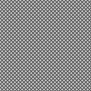
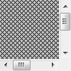
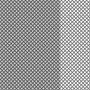
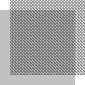

RD1002: IE6 IE7(Q) IE8(Q) 中一个非替换元素的 'overflow' 为 'visible' 时其尺寸会为了容纳其非绝对定位的内容而变大
标准参考
一个元素的 'overflow' 特性定义了当该元素的内容溢出该元素的内容区域时是否被剪切。它的默认值是 'visible'，即不进行剪切，这可能导致该元素的内容在该元素的内容区域之外被渲染。
关于 'overflow' 的更多信息，请参考 CSS 2.1 规范 11.1.1 Overflow: the 'overflow' property 中的内容。
问题描述
在 IE6 IE7(Q) IE8(Q) 中，如果一个非替换元素的 'overflow' 为 'visible'，当该元素无法完全容纳其非绝对定位的内容时，该元素的尺寸将被其内容撑大。
在上述情况发生时，为这个非替换元素设置的 'width' 和 'height' 与 CSS 2.1 中的 'min-width' 和 'min-height' 的作用类似：设定值不是最终的实际值，实际值可能更大。
造成的影响
这个问题将导致一些元素的实际尺寸在 IE 和非 IE 浏览器中不一致，从而引起布局混乱、内容重叠等现象。
受影响的浏览器
| IE6 IE7(Q) IE8(Q) |
|---|
问题分析
几种不同情况下的测试
为了描述方便，我们将受此问题影响的元素称为 Container，其内容称为 Content。
1. Content 位于 normal flow
1.1. Container 设定了尺寸
基本测试代码：
<div id="Container" style="width:100px; height:100px; background:silver;"> <div id="Content" style="width:150px; height:150px; background:url(x.gif);"></div> </div>
- Container 的尺寸为 100px*100px，没有设置 'overflow'，因此其值为默认值 'visible'。
- Content 的尺寸为 150px*150px，设置了一个网格状的图片背景。它的尺寸比 Container 的尺寸大。
根据 CSS 2.1 规范中的描述可知，Content 未被 Container 容纳的部分会溢出 Container 并在 Container 的内容区域之外被渲染。
这段代码在不同浏览器中的表现：
| IE6 IE7(Q) IE8(Q) | 其他浏览器 |
|---|---|
|  |  |
在 IE6 IE7(Q) IE8(Q) 中，Container 设定的尺寸失效，实际尺寸被撑大。
在 其他浏览器 中表现正确。
在基本测试代码的基础上，给 Container 设置 'overflow:hidden' 后：
| 所有浏览器 |
|---|
 |
'overflow' 不为 'visible' 时，在所有浏览器中的表现一致。
在基本测试代码的基础上，给 Container 设置 'overflow:auto' 或 'overflow:scroll' 后：
| 所有浏览器 |
|---|
|  |
同上，'overflow' 不为 'visible' 时，在所有浏览器中的表现一致。
在基本测试代码的基础上，给 Container 设置 'overflow-x:scroll' 后1：
| IE6 IE7(Q) IE8(Q) | 其他浏览器 |
|---|---|
 |
'overflow-y' 为 'visible'，在 IE6 IE7(Q) IE8(Q) 中，Container 设定的高度失效，实际高度被撑大。
设置 'overflow-x' 为 'auto'，结果相同。
设置 'overflow-y' 为 'scroll' 或 'auto'，而 'overflow-x' 为 'visible'，结果与上述结果类似，Container 设定的宽度失效，实际宽度被撑大。
不论如何设置 'overflow-x' 和 'overflow-y'，在 其他浏览器 中均表现正确。
注：
1. 'overflow-x' 和 'overflow-y' 是 CSS 3 草案中引入的特性，虽然目前的 CSS 2.1 中没有对这两个特性的描述，但本文涉及的所有浏览器都支持它们。关于他们的更多信息（也会有兼容性问题）请参考 RV1001: 各浏览器中当 'overflow-x' 和 'overflow-y' 一个值为 'hidden' 另一个值为 'visible' 时的组合渲染结果存在差异 中的内容。
1.2. Container 没有设定尺寸
分析以下代码：
<div style="width:100px; height:100px;">
<div id="Container style="background:silver;">
<div id="Content" style="width:150px; height:150px; background:url(x.gif);"></div>
</div>
</div>
- Container 并没有设定尺寸，其父容器尺寸为 100px*100px。
- Content 的尺寸为 150px*150px。根据 CSS 2.1 'width' 和 'height' 的描述，Container 的尺寸应为 100px*150px。
这段代码在不同浏览器中的表现：
| IE6 IE7(Q) IE8(Q) | 其他浏览器 |
|---|---|
|  |
在 IE6 IE7(Q) IE8(Q) 中，Container 的实际宽度被撑大。
在 其他浏览器 中表现正确。
修改 'overflow' 的测试结果与 1.1 类似，故省略。
2. Content 是浮动元素
分析以下代码：
<div id="Container" style="width:100px; height:100px; background:silver;"> <div id="Content" style="float:left; width:150px; height:150px; background:url(x.gif);"></div> </div>
- Container 的尺寸为 100px*100px，没有设置 'overflow'，因此其值为默认值 'visible'。
- Content 的尺寸为 150px*150px，设置了一个网格状的图片背景。它是一个浮动元素。它的尺寸比 Container 的尺寸大。
这段代码在不同浏览器中的表现：
| IE6 IE7(Q) IE8(Q) | 其他浏览器 |
|---|---|
|
与 1.1 Content 位于 normal flow 中的测试一样，在 IE6 IE7(Q) IE8(Q) 中，Container 设定的尺寸失效，实际尺寸被撑大。
在 其他浏览器 中表现正确。
Container 不设定尺寸的测试结果与 1.2 类似，故省略。
3. Content 有负的外边距
分析以下代码：
<div id="Container" style="width:100px; height:100px; background:silver;"> <div id="Content" style="width:150px; height:150px; margin-left:-20px; background:url(x.gif);"></div> </div>
- Container 的尺寸为 100px*100px，没有设置 'overflow'，因此其值为默认值 'visible'。
- Content 的尺寸为 150px*150px，设置了一个网格状的图片背景，并有一个负的左外边距。它的尺寸比 Container 的尺寸大。
这段代码在不同浏览器中的表现：
| IE6 IE7(Q) IE8(Q) | 其他浏览器 |
|---|---|
 |
 |
在 IE6 IE7(Q) IE8(Q) 中，Content 溢出的部分会被裁切1，仍能显示在 Container 内的部分会撑大 Container。
在 其他浏览器 中表现正确。
Container 不设定尺寸的测试结果与 1.2 类似，故省略。
注：
1. 这是 IE6 IE7(Q) IE8(Q) 中的另一个兼容性问题，具体请参考 RB1001: IE6 IE7 IE8(Q) 负边距 (margin) 导致元素溢出 hasLayout 容器时显示异常 中的内容。
4. Content 相对定位
分析以下代码：
<div id="Container" style="width:100px; height:100px; background:silver;"> <div id="Content" style="position:relative; left:20px; top:-20px; width:150px; height:150px; background:url(x.gif);"></div> </div>
- Container 的尺寸为 100px*100px，没有设置 'overflow'，因此其值为默认值 'visible'。
- Content 的尺寸为 150px*150px，设置了一个网格状的图片背景。它是一个相对定位元素，并且设置了偏移量。它的尺寸比 Container 的尺寸大。
这段代码在不同浏览器中的表现：
| IE6 IE7(Q) IE8(Q) | 其他浏览器 |
|---|---|
|  |  |
在 IE6 IE7(Q) IE8(Q) 中，Content 虽然有偏移量，但与 3. Content 有负的外边距 的情况不同，Container 仍会被 Content 撑大，就像 Content 不是相对定位元素时一样。
在 其他浏览器 中表现正确。
Container 不设定尺寸的测试结果与 1.2 类似，故省略。
5. Content 绝对定位
分析以下代码：
<div id="Container" style="width:100px; height:100px; background:silver;"> <div id="Content" style="position:absolute; width:150px; height:150px; background:url(x.gif);"></div> </div>
- Container 的尺寸为 100px*100px，没有设置 'overflow'，因此其值为默认值 'visible'。
- Content 的尺寸为 150px*150px，设置了一个网格状的图片背景。它是一个绝对定位元素。它的尺寸比 Container 的尺寸大。
这段代码在不同浏览器中的表现：
| 所有浏览器 |
|---|
|
在 所有浏览器 中表现都没有差异。
结论
在 IE6 IE7(Q) IE8(Q) 中，对于 'overflow' 的错误处理在某些情况下会导致元素的实际尺寸与预期不符。
这个问题在 IE6 IE7(Q) IE8(Q) 中存在，在满足以下条件的元素上被触发：
- 该元素是一个非替换元素。1
- 该元素的 'overflow' 为 'visible'。2
- 该元素的尺寸不能完全容纳其非绝对定位元素，或设置了负的外边距后未被剪切掉的子孙级元素的内容。
这个问题将导致该元素的尺寸被其内容撑大。
这个问题在 IE7(S) 中被修复。
注：
1. 这个问题一般发生在块级非替换元素上，但在受影响的浏览器中，如果一个行内非替换元素触发了 hasLayout，也将受此问题影响。
2. 可以细化为该元素的 'overflow-x' 为 'visible' 或 'overflow-y' 为 'visible'，这将导致在横向或纵向溢出的非绝对定位元素或设置了负的外边距后未被剪切掉的子孙级元素的内容在横向或纵向撑大其尺寸。
解决方案
使用能触发标准模式 (S) 的 DTD，以将受此问题影响的浏览器的范围缩小到仅 IE6(S)。
如果不能保证一个希望尺寸固定的非替换元素总是能容纳其内容，请将该元素的 'overflow' 设置为非 'visible' 的值。
参见
知识库
相关问题
测试环境
| 操作系统版本: | Windows 7 Ultimate build 7600 |
|---|---|
| 浏览器版本: |
IE6 IE7 IE8 Firefox 3.6 Chrome 4.0.302.3 dev Safari 4.0.4 |
| 测试页面: | expand.html |
| 本文更新时间: | 2010-05-19 |
关键字
overflow visible 非替换元素 尺寸 撑大 内容 溢出